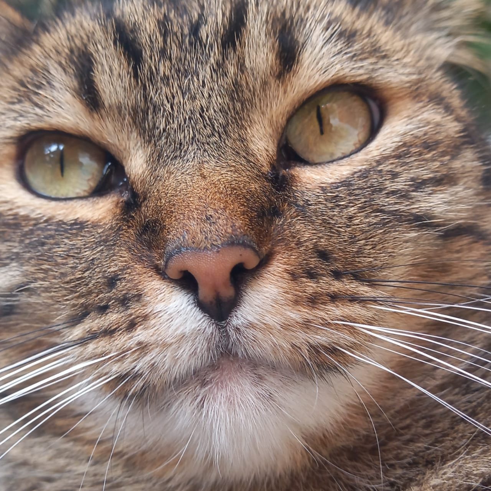

¡Hola mundo! Soy Andrea. A veces me dicen Andy.
Aunque ahora tengo 25 años, esta foto sigue siendo uno de los retratos más fieles a mi persona.
Me encanta el Halloween, los dulces, los misterios y los gatos.
Mis hobbies
- Practicar natación
- Dibujar cómics
- Leer fanfics y abrazar a Chanclita
- Escuchar música

Aquí una foto de la mejor gatita del mundo.
Todos los episodios de la primra temporada de Bob Esponja (1999)fueron animados con técnicas tradicionales de acetato sobre pintura, haciendo que cada fotograma de la animación (probablemente 24 fps) conllevara horas de trabajo? Terminaste los deberes?
La adaptación a televisión de "Crónicas vampíricas: Entrevista con el vampiro" de la cadena AMC, es mucho mejor que las novelas de Anne Rice en las que está basado el show, y que deberías ir a verlo de inmediato? Es verdad.
No somos los únicos animales que practican la agricultura: Las hormigas cortahhojas ocupan las hojas que cortan para apilarlas y, mezclándolas con la humedad de su saliva y colocándolas en una cabia de su hormiguero con temperatura regulada, cultivar una especie de hongo específico que es su única fuente de alimento? Las hormigas son poderosamente autosustentables, inteligente y trabajan bien en equipo. Vivan las hormigas.